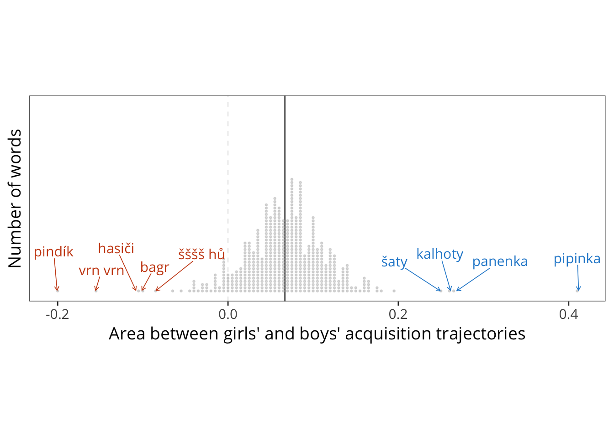
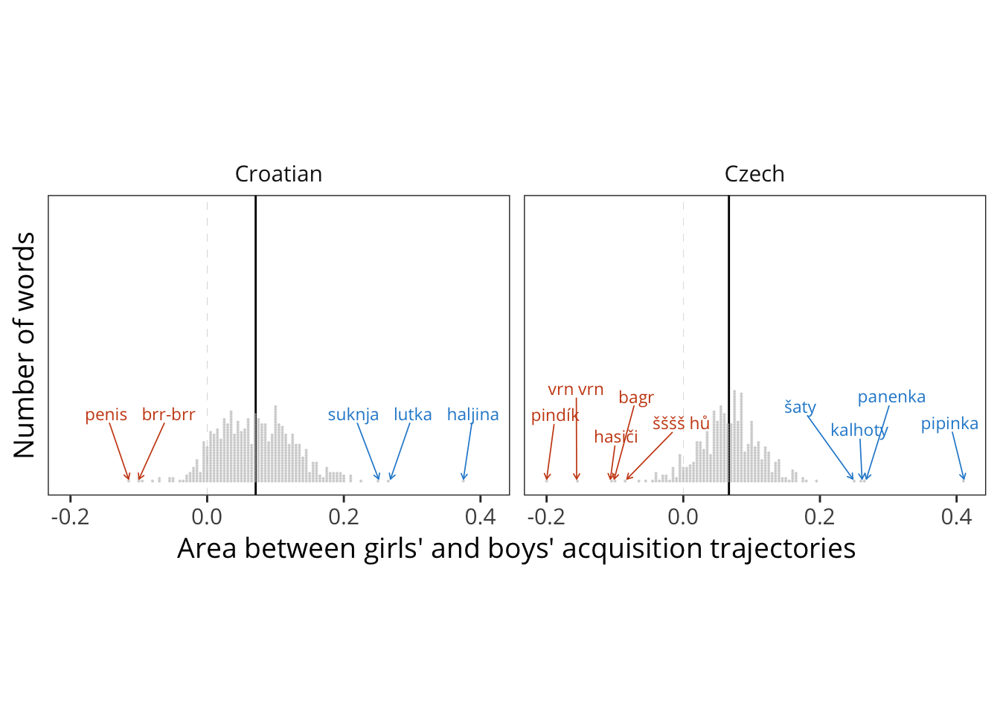
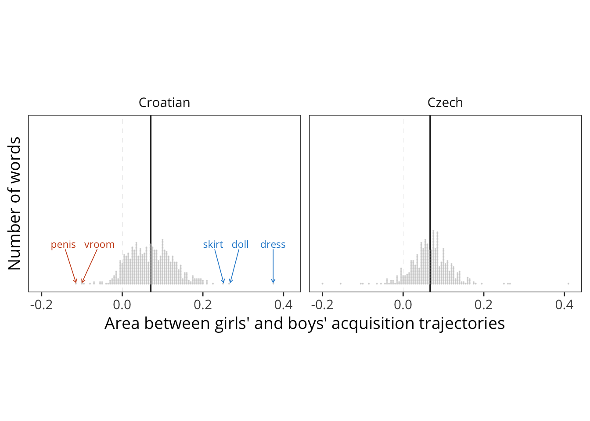

8 Individual Words: Demographics
THIS IS ALL JUST STRAIGHT FROM https://github.com/mikabr/gender-input
8.1 Get CDI data
For each dataset, compute proportion of children of each age and gender who produce/understand each word, fit a logistic regression to those proportions, and then estimate the area between the curves for girls and boys.
#> [1] "Croatian"
#> [1] "Czech"To estimate the reliability of area differences, split datasets into groups and find the correlation between the groups’ area difference estimates.
Plot distribution of acquisition differences for English. 
Plot distribution of acquisition differences for all languages.

And with unilemmas:

What are the most girl/boy categories and uni_lemmas?
Girl unilemmas
| uni_lemma | n |
|---|---|
| NA | 10 |
| comb (object) | 1 |
| cry | 1 |
| doll | 1 |
| dress (object) | 1 |
| handkerchief | 1 |
| paper | 1 |
| plate | 1 |
| pretty | 1 |
| skirt | 1 |
| stroller | 1 |
Girl categories
| category | n |
|---|---|
| clothing | 9 |
| household | 4 |
| toys | 2 |
| action_words | 1 |
| body_parts | 1 |
| descriptive_words | 1 |
| food_drink | 1 |
| vehicles | 1 |
| Boy unilemmas |
| uni_lemma | n |
|---|---|
| NA | 10 |
| about | 1 |
| him | 1 |
| motorcycle | 1 |
| peekaboo | 1 |
| penis | 1 |
| that | 1 |
| tractor | 1 |
| truck | 1 |
| vroom | 1 |
| was | 1 |
Boy categories
| category | n |
|---|---|
| vehicles | 8 |
| sounds | 3 |
| body_parts | 2 |
| pronouns | 2 |
| action_words | 1 |
| games_routines | 1 |
| helping_verbs | 1 |
| locations | 1 |
| outside_places | 1 |
Plot top 10 girlest/boyest for all words, most common word cross-linguistically, most common category cross-linguistically.